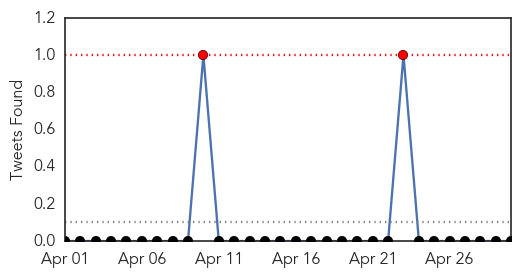
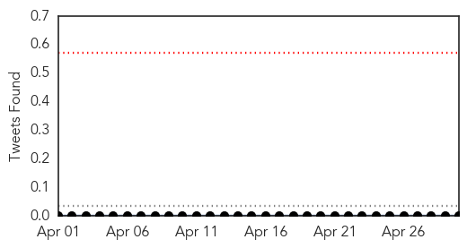
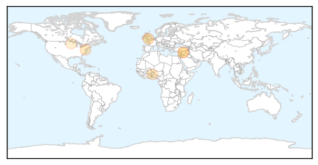
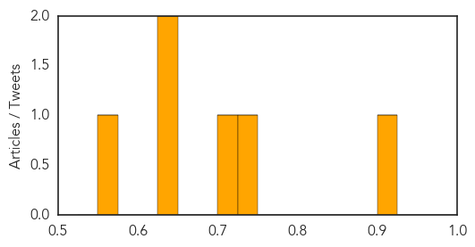

Cholera
30-Day Web Trend
0 alerts, 0 warnings
30-Day Twitter Trend
2 alerts, 0 warnings

Article Locations
Article Confidences

Top Articles:
Top Tweets:
-
No tweets found for Apr 30, 2014
Meningitis
30-Day Web Trend
1 alerts, 0 warnings
30-Day Twitter Trend
0 alerts, 0 warnings

Article Locations
Article Confidences
Top Articles:
- 0.906
- WHO warns that antibiotics resistance crisis could be worse than Aids
- 0.726
- Report: Drug-Resistant Bacteria Pose Major Threat to Global Public Health
- 0.700
- Innovations in Vaccine Delivery in Africa
- 0.650
- Drug resistance has spread worldwide: World Health Organization
- 0.631
- Drug-resistant bacteria now a worldwide concern: WHO
- 0.570
- Minnesota gives boost to immunization requirements
Top Tweets:
-
No tweets found for Apr 30, 2014